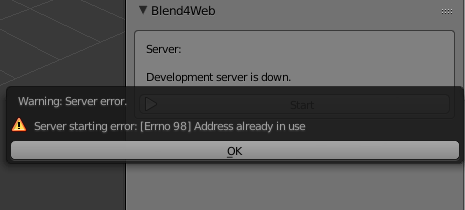
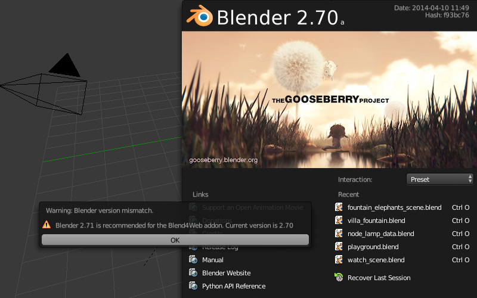
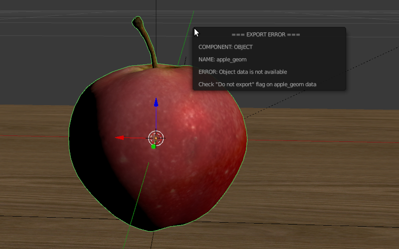
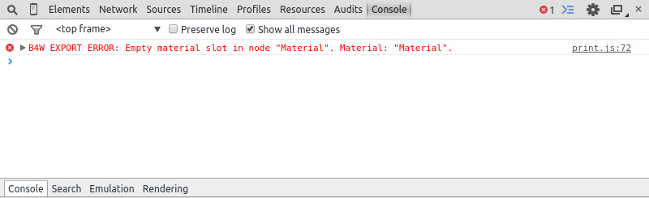

Add-on¶
Table of Content
Local Development Server¶
Settings for the local development server can be found in File > User Preferences... (hot keys Ctrl-Alt-U). Here you can change the port number to be used to run the development server (6687 by default), and also enable its launching upon Blender startup. To do this, enable Run on Startup option in the add-on settings.

After changing local development server settings in it required to restart Blender.
It is possible for the local server to process external requests. To do that enable the option Enable External Requests.
If you chose not to start the server automatically, you can always do it manually: go to the Render tab and press the Start Server button on the Development Tools panel:

Note
If the local development server cannot be launched, the corresponding message will be displayed instead of the Start Server button.
If the server is failed to run, an error message will be shown describing the reason:
This error can arise if the server port is already used by some other application.
Press the SDK Index button to open the index web page of the Blend4Web SDK in the browser. This page is available at http://localhost:6687.
{kind=link}
As a result, the default browser for your operating system will be launched.
The Project Manager button can be used to open project manager.
The Fast Preview button loads the scene that is currently open in Blender, into the viewer.
The server can be stopped by pressing the Stop Server button. It also stops when Blender is closed.
Running Viewer and Demos¶

The index page contains the following links:
- Project Manager;
- Code Snippets, a list of demo applications. A WebGL-capable browser is required to run these apps;
- WebGL Report page for checking the level of WebGL support provided by the web browser;
- User Manual, available in both HTML and PDF form in three languages;
- API Reference that contains descriptions for every API module and method provided with the Blend4Web engine;
- Tutorials;
- FAQ page where you can find answers to some of the most basic questions regarding using the engine;
- Community Support Forums;
- Support Email (only available in PRO version).
Note
If the SDK apps are not displayed correctly, or error messages are shown, follow the instructions in the Problems Upon Startup section.
Export Formats¶
After the scene is finished, you need to convert it into a format supported by the Blend4Web engine.
For now, two formats are supported: JSON and HTML.
JSON¶
Exporting the scene to this format creates a .json (JavaScript Object Notation) file that contains all exported data structures and links to external resources (images, sounds and such), and also a .bin file that contains model data arrays in binary format.
If media resources are packed into the .blend file, they will be unpacked during the export and placed in the project’s directory (inside the SDK directory). It should be noted that the names of such files will be automatically changed, which can complicate working with them.
It is recommended to store all the resources in a dedicated folder inside the SDK directory, it can be called projects/project_name/assets for example.
Note
In accordance with the security measures, the development server can only access the SDK folder. If media data is placed in another folder, the server won’t be able to deploy it during the export (even if it is working correctly in Blender itself).
Paths to the external resources should be relative. If this is not the case, execute the File > External Data > Make All Paths Relative command, or else problems with opening the file on other computers may occur.
This is the main format for complex projects that include multiple scenes and require JavaScript programming. Project development is further described in the corresponding section.
HTML¶
Exporting the scene to this format pack all scene resources into one file with the HTML extension. This HTML file contains not only the scene itself, but also textures, sounds, Blend4Web engine and standard web player. A file like this can be executed on any computer and any mobile device that have a web browser with WebGL support.
You can’t use HTML files for further development, but you also don’t need any additional actions to run them. This format is useful for developing relatively simple applications of moderate size.
It should be noted, however, that HTML applications do not support following features:
Export Options¶
- Autosave blend File
- Autosaving the file from which export occurs. Enabled by default. Autosaving is performed right after the export to guarantee conformity between the current blend file and the exported file contents. In addition, the relative path to the exported file is saved for convenience.

- Strict Mode
- This mode prevents export if there are any errors or messages for users’ attention. This mode is enabled with the
Strict Modesetting in the export menu:
{kind=link}
If there are any non-critical errors or messages for users’ attention, a dialog window will be show like this:

- Export Converted Media
- This option is available for HTML export. When this option is enabled, the converted media files of different formats are written in the HTML file. Using different media files is essential to create cross-browser and cross-platform applications while using HTML export. These files can be created by the converter.

- Run in Viewer
Automatically launch the Scene Viewer and add the exported scene to it.
When using the local development server, there is a possibility to open the exported
.jsonscene in the Scene Viewer. To do this, select any path inside the Blend4Web SDK file structure upon export.A directory inside the SDK should be used for export. If not, this option will not be displayed in the menu. Also, it will not be displayed if the local development server is down.

Initialization Errors¶
Initialization errors can arise upon installation of the add-on or when a scene is opened in Blender. In this case a dialog window with the error description is showed.
{kind=link}
| Error message | Cause |
|---|---|
| Blend4Web initialization error! Add-on is not compatible with the PLATFORM platform. | The Blend4Web add-on is not compatible with the PLATFORM platform. |
| Warning: Blender version mismatch. Blender VER_REQUIRED is recommended for the Blend4Web add-on. Current version is VER_CURRENT. | Warning about possible incompatibility with the current Blender version. It is recommended to use VER_REQUIRED Blender version. The current version is VER_CURRENT. |
| Incorrect add-on directory name. | Incorrect name of the add-on directory. Add-on structure in the archive has been damaged, or entirety of the archive has been disrupted. |
Compatibility Errors¶
Compatibility errors may arise when trying to view a scene in a browser, in the following cases: if version of the add-on used to export the scene differs from version of the Blend4Web engine which tries to load the scene, or if .bin file does not correspond to the .json file.
Engine version is too old as compared to version of the add-on with which the scene was exported. The scene will not be loaded. We recommend you to use the latest versions of the engine and the add-on.
| Error message | Cause |
|---|---|
| JSON version is too old relative to B4W engine: VER_OLD, required: VER_NEW. Reexport scene with the latest B4W add-on to fix it. | Version of the add-on, with which the scene was exported, is too old: VER_OLD. The engine requires: VER_NEW. The scene will not be loaded. We recommend you to reexport the scene using the latest version of the add-on. We also recommend to use the latest version of the engine. |
| JSON version is a bit old relative to B4W engine: VER_OLD, required: VER_NEW. Some compatibility issues can occur. Reexport scene with the latest B4W add-on to fix it. | Version of the add-on, with which the scene was exported, is a bit old: VER_OLD. The engine requires: VER_NEW. The scene will be loaded as usual, however some errors may occur. We recommend you to reexport the scene using the latest version of the add-on. We also recommend to use the latest version of the engine. |
| B4W engine version is too old relative to JSON. Can’t load the scene. Update your engine version to fix it. | Engine version is too old as compared to version of the add-on with which the scene was exported. The scene will not be loaded. We recommend you to use the latest versions of the engine and the add-on. |
| B4W engine version is a bit old relative to JSON. Some compatibility issues can occur. Update your engine version to fix it. | Engine version is a bit old as compared to version of the add-on with which the scene was exported. The scene will be loaded as usual, however some errors may occur. We recommend you to use the latest versions of the engine and the add-on. |
| BIN version does not match to JSON version: VER_BIN, required: VER_JSON. Couldn’t load the scene. Reexport scene to fix it. | Version of the .bin file is too old relative to .json file: VER_BIN, .json file version is VER_JSON. The scene will not be loaded. We recommend you to reexport your scene. |
| BIN version does not match to JSON version: VER_BIN, required: VER_JSON. Some compatibility issues can occur. Reexport scene to fix it. | Version of the .bin file is a bit old relative to .json file: VER_BIN, .json file version is VER_JSON. Some incompatibility errors can arise. We recommend you to reexport your scene. |
Critical Export Errors¶
In case of export errors a BLEND4WEB EXPORT ERROR dialog box describing of the problem appears:

COMPONENT- type of component (object, mesh, material, texture etc) that has caused the export error.
NAME- component name.
ERROR- short description of the occurred problem.
{kind=link}
| Error message | Cause |
|---|---|
| Export to different disk is forbidden | Export to a directory located on a different disk is forbidden |
| Incompatible objects with a shared mesh; The OBJECT_NAME object has both vertex groups and a shared mesh | Incompatible objects with a shared mesh.
Export of an object with both a shared
mesh and vertex groups is not allowed.
Exceptions: export is possible if an
object has the
Apply modifiers,
Export vertex animation,
Export edited normals,
Apply Scale and Modifiers
options turned on (because in these cases
a full copying of meshes occurs). |
| Incorrect mesh; Corrupted file: Wrong vertex color values | Corrupted file: incorrect vertex color value. |
| Loading of resources from different disk is forbidden | Loading of resources from different disk is forbidden. |
| The material has a normal map but doesn’t have any material nodes | The node material uses Normal Mapping,
but has no Material node. |
| The mesh has a UV map but has no exported material | The mesh has a UV map layer but has no material for export. |
| The mesh has a vertex color layer but has no exported material | The mesh has a vertex color layer but has no material for export. |
| No such file or directory | The file or directory does not exist. |
| Permission denied | No access rights to the current directory. |
| Wrong edited normals count; It doesn’t match with the mesh vertices count | The number of edited normals does not
match the number of the mesh vertices.
Execute Clean Up or Save in the
B4W Vertex Normals Editor panel. |
| Wrong overridden bounding box; Check the mesh’s bounding box values | Wrong dimensions are specified when
overriding the mesh’s BoundingBox:
minimum value is greater than maximum
value for at least one of the dimensions. |
Non-Critical Export Errors¶
In contrast to the above-listed critical export errors, these errors do not prohibit the export, but can make scenes displayed incorrectly. These messages can be viewed in the browser console (opens with F12) when a scene is loaded. The message looks like this:
B4W EXPORT ERROR: Error message
{kind=link}
| Error message | Cause |
|---|---|
| Canvas texture ID NAME already exists. Texture NAME. | This Canvas ID already exists. |
| Dupli group error for object OBJECT_NAME. Objects from the GROUP_NAME dupli group on the OBJECT_NAME object cannot be exported | None of the objects in the GROUP_NAME group which were selected for duplication on the OBJECT_NAME object can be exported. Permission to export at least one object of the group, or to remove the duplication of the group is required. |
| Empty canvas texture ID for texture NAME. | Canvas ID is empty. |
| Empty material slot in node “NAME”. Material: “NAME”. | Empty material slot in “NAME” node. |
| Environment map in the “NAME” world texture slot cannot be a movie. | Environment map can not be presented with a video file. |
| Ignoring LODs after empty LOD for the NAME object. | All LOD objects that follow the empty slot were ignored (in the LOD objects list for the NAME object). |
| Incomplete mesh NAME; Dynamic grass vertex colors required by material settings | The Dynamic grass size and/or
Dynamic grass color options are used
by the special terrain material but the
mesh has no vertex colors with such
names. |
| Incomplete mesh; Material settings require vertex colors | The Vertex Color Paint option is
enabled for the mesh material, but the
mesh has no vertex color layers. |
| Incorrect NLA script, falling back to simple sequential NLA. | Incorrect NLA script. Falling back to simple sequential NLA. |
| Incorrect vertex animation for mesh NAME. Object has no vertex animation. | The object’s vertex animation export option is on, but there is no vertex animation. |
| Incorrect vertex animation for mesh NAME. Unbaked “ANIM_NAME” vertex animation. | Vertex animation export is turned on for the mesh, but the ANIM_NAME animation doesn’t have any frames. |
| Incorrect mesh NAME; Wrong group indices | The mesh has vertices assigned to the non-existing vertex group. |
| Incorrect mesh NAME; Wrong vertex positions | Corrupted file: incorrect vertex coordinate value. |
| Incorrect mesh NAME; Wrong normals | Corrupted file: incorrect normal value. |
| Incorrect mesh NAME; Wrong tangents | Corrupted file: incorrect tangent value. |
| Incorrect mesh NAME; Wrong texture coordinates | Corrupted file: incorrect texture coordinate value. |
| Incorrect mesh NAME; Wrong vertex group weights | Corrupted file: incorrect vertex group weight value. |
| Incomplete vehicle. The NAME vehicle doesn’t have any chassis or hull | The modelled NAME vehicle is not complete
as it should contain a Chassis or a
Hull element. |
| Incomplete vehicle. The NAME vehicle requires at least one bob | The modelled NAME vehicle is not
complete as it should contain at least
one Bob element. |
| Incomplete vehicle. The NAME vehicle requires at least one wheel | The modelled NAME vehicle is not
complete as it should contain at least
one Wheel element. |
| Invalid link found in node material. Material: “NAME”. | The “NAME” node material contains an incorrect link between nodes. |
| No image in the NAME texture. [Material: NAME.] | The texture has no image. |
| No texture for the NAME particle settings texture slot. | No texture in the particle settings’ texture slot. |
| No texture in the NAME world texture slot. | No texture in the NAME world’s texture slot. |
| No texture in the texture slot. Material: NAME. | There is no texture in the material texture slot. |
| Node material invalid: “NAME”. Check sockets compatibility: “FROM_NODE” with “TO_NODE”. | Node material error: the input and output
types of the link between the
FROM_NODE and TO_NODE nodes
should match. |
| Object “NAME” hasn’t renderable data. Converted to EMPTY. | An object named “NAME” is degenerate, e.g. has no polygons. The object’s type has been changed to EMPTY. |
| Object: “NAME” > Constraint: “CONSTRAINT_TYPE”. Check constraint settings. | The object “NAME” has a constraint of type “CONSTRAINT_TYPE”, which isn’t configured properly. |
| Object “NAME” has the mesh with shape keys. The property “Relative” of mesh has been enabled. | An object named “NAME” has a mesh with shape keys. This mesh has the “Relative” property enabled which is forbidden. |
| Object “NAME” has no data or data is broken. Change object type to EMPTY. | An object named “NAME” has no mesh or mesh is broken. The object’s type has been changed to EMPTY. |
| Packed media “FILE_NAME” has not been exported to “CONVERTED_FILE_PATH” | The packed media file “FILE_NAME” cannot be converted to “CONVERTED_FILE_PATH”. Please unpack this file and convert it. |
Particle system error for “NAME”;
The “NAME” vertex color specified
in the from field is missing in
the last of the “OBJECT_NAME”
object’s vertex colors |
The NAME vertex color is specified in
the from field but it’s not presented
in the OBJECT_NAME emitter. |
Particle system error for “NAME”;
The “NAME” vertex color specified
in the to field is missing in
the list of the “OBJECT_NAME”
object’s vertex colors |
The NAME vertex color is specified in the
to field but it is not present in the
OBJECT_NAME object which is selected as a
particle. |
Particle system error for “NAME”;
The “NAME” vertex color specified
in the “to field is missing in
the “OBJECT_NAME” object
(“GROUP_NAME” dupli group) |
The NAME vertex color is specified in the
to field but it is not present in
the OBJECT_NAME object of the GROUP_NAME
group which is selected as a particle. |
| Particle system error for object “NAME”. Invalid dupli object “OBJECT_NAME”. | Particle system error for the object NAME. Invalid dupli-object OBJECT_NAME. |
| Particle system error. Unsupported render type “TYPE” for the HAIR particles “NAME” on object “OBJECT_NAME”. Particle system removed. | Particle system error. Unsupported render type TYPE for the HAIR particles PSYS_NAME on object NAME. The particle system has removed. |
| Particle system error. Unsupported render type “TYPE” for the EMITTER particles “NAME” on object “OBJECT_NAME”. Particle system removed. | Particle system error. Unsupported render type TYPE for the EMITTER particles PSYS_NAME on object NAME. The particle system has removed. |
| Particle system error for “NAME”. Dupli object isn’t specified. | Particle system error: no object is selected as a particle. |
| Particle system error for “NAME”. Dupli group isn’t specified. | Particle system error: no group is selected as a particle. |
| Particle system error for “NAME”. Wrong dupli object type “TYPE”. | An object of unsuitable type is selected
for the particle. Supported types:
MESH. |
| Particle system error for “NAME”. Dupli object “NAME” has not been exported. | The NAME object which is selected
as a particle can not be exported (the
Do not export checkbox is set). |
| Particle system error for “NAME”. The “GROUP_NAME” dupli group contains no valid object for export. | The GROUP_NAME dupli group which is
selected as a particle contains no valid
object for export. Either such objects
have the Do not export checkbox
enabled or the types of the objects are
unsuitable. Supported object types:
MESH. |
| Sound file is missing in the SPEAKER object “NAME”. Converted to EMPTY. | The speaker has no sound attached. The object’s type has been changed to EMPTY. |
| The lamp object “NAME” has unsupported AREA type. Changed to SUN. | The lamp object “NAME” has unsupported AREA type. Lamp type has been changed to SUN. |
| The main scene NAME can not be rendered by another scene. Material NAME has been removed. | The main scene NAME can not be rendered by another scene. The material NAME has been deleted. |
| The NAME action has decimal frames. Converted to integer. | The NAME action has decimal frames, which isn’t supported. Converted to integer. |
| The NAME armature modifier has a proxy object as an armature. Modifier removed. | An armature modifier has a proxy object as an armature. |
| The NAME armature modifier has no armature object or it is not exported. Modifier removed. | The NAME Armature modifier has no
armature object or it is not exported.
Modifier removed. |
| The NAME curve modifier has no curve object. Modifier removed. | The NAME curve modifier has no object. Modifier removed. |
| The NAME curve modifier has unsupported curve object. Modifier removed. | The NAME curve modifier has unsupported object. Modifier removed. |
| The NAME object has the NAME armature modifier and a vertex animation. Modifier removed. | The NAME object has both vertex animation and an armature modifier which is not supported. As a result, the modifier has been removed. |
| The NAME object has the NAME armature modifier. It belongs to a not exported scene. Modifier removed. | The NAME object has the NAME armature modifier. The armature object in this modifier isn’t specified or belongs to a not exported scene. Modifier removed. |
| The NAME LAMP node has no lamp object. Material: NAME. | Wrong object specified in the NAME
LAMP node. |
| The NAME node is not supported. The NAME material will be rendered without nodes. Material: NAME. | The engine does not support the node with this name, and so the node material will be turned off. Often this happens when Cycles nodes are used. |
| The NAME object has NAME armature modifier which references the wrong group. Modifier removed. | An object should be in the same group as an armature, or both these objects should be explicitly present in the scene. |
| “TEXTURE_TYPE” texture type is not supported for world “NAME”. | TEXTURE_TYPE texture type isn’t supported for world WORLD_NAME |
| Using B4W_REFRACTION node NODE_NAME with incorrect type of Alpha Blend. Material: NAME. | A node material with incorrect Alpha
Blend property is used. Alpha sort,
Alpha blend and Add are allowed
when using a “REFRACTION” node. |
| Wind bending: not all vertex colors exist for “NAME”. Properties were set to default values. | Wind bending parameters setup: all specified vertex color layers should exist. |
| Wind bending: vertex colors weren’t properly assigned for “NAME”. Properties were set to default values. | Wind bending parameters setup: it’s
required to specify the names of either
all vertex color layers
(Main stiffness (A),
Leaves stiffness (R),
Leaves phase (G),
Overall stiffness (B)),
or of the main one only
(Main stiffness (A)),
or of none of them. |
| Wrong “Height Map” input for the “NAME” B4W_PARALLAX node. Only link from the TEXTURE node with a non-empty texture is allowed. | Wrong data were passed to the “Height
Map” input of the NAME B4W_PARALLAX
node. Only the output from a non-empty
TEXTURE node is allowed. |
| Wrong texture coordinates type in texture NAME. [Material: NAME.] | The following coordinate types are
supported for image textures: UV,
Normal and Generated. |
| Wrong F-Curve interpolation mode for ACTION_NAME. Only BEZIER, LINEAR or CONSTANT mode is allowed for F-Curve interpolation. Switch to BEZIER. | The following types are supported for
action interpolation mode: BEZIER,
LINEAR and CONSTANT. |
| Wrong vertex animation vertices count for mesh NAME. It doesn’t match with the mesh vertices count for “ANIM_NAME”. | Vertex animation export is enabled but the number of vertices in the baked ANIM_NAME animation frames does not match the mesh vertices number. Possible solution is to “re-bake” the animation. |
Other Messages¶
These messages can be viewed in the browser console (opens with F12) when a scene is loaded. The message looks like this:
B4W EXPORT WARNING: Export message which requires the user's attention

| Error Message | Cause |
|---|---|
| Material tangent shading is enabled, but object’s mesh has no UV map. | The material has the option “Tangent Shading” enabled, which always requires a UV map. |
| Missing active camera or wrong active camera object | There is no active camera on the scene
(Camera property on the Scene
tab). |
| Missing world or wrong active world object | There should be at least one world datablock in the scene. |
| NAME particle settings has the NAME texture rendering a scene. It has been replaced by the default texture. | The particle settings datablock NAME contains the texture NAME being used for rendering a scene into. This texture has been replaced by a default texture. |
| The action NAME has no fcurves. | The action with the name “NAME” has no fcurves. |
| The “NAME” camera has unsupported PANORAMIC type. Changed to PERSPECTIVE type.” | Panoramic cameras are not supported. Perspective mode is used instead. |
| Unsupported texture type or texture is missing for Lens Flare material “NAME” | There are no textures on the material or unsupported texture type is used for material “NAME”. |
| Use of ENVIRONMENT_MAP as diffuse color is not supported. Use as mirror instead. | The ENVIRONMENT MAP texture can not be used as diffuse color. Disable the Diffuse > Color and enable the Shading > Mirror option on the Textures > Influence panel to use this texture as mirror map. |
Add-on Translations¶
There is the possibility to translate the add-on to a language supported by Blender. In order to do this, rename the file “empty.po”, which located in the directory SDK/blender_scripts/addons/blend4web/locales, to one of the names in the following table:
| File name | Language |
|---|---|
| ru_RU.po | Russian |
| ja_JP.po | Japanese |
| en_US.po | English |
| nl_NL.po | Dutch |
| it_IT.po | Italian |
| de_DE.po | German |
| fi_FI.po | Finnish |
| sv_SE.po | Swedish |
| fr_FR.po | French |
| es.po | Spanish |
| ca_AD.po | Catalan |
| cs_CZ.po | Czech |
| pt_PT.po | Portuguese |
| zh_CN.po | Simplified Chinese |
| zh_TW.po | Traditional Chinese |
| hr_HR.po | Croatian |
| sr_RS.po | Serbian |
| uk_UA.po | Ukrainian |
| pl_PL.po | Polish |
| ro_RO.po | Romanian |
| ar_EG.po | Arabic |
| bg_BG.po | Bulgarian |
| el_GR.po | Greek |
| ko_KR.po | Korean |
| ne_NP.po | Nepali |
| fa_IR.po | Persian |
| id_ID.po | Indonesian |
| sr_RS@latin.po | Serbian Latin |
| ky_KG.po | Kyrgyz |
| tr_TR.po | Turkish |
| hu_HU.po | Hungarian |
| pt_BR.po | Brazilian Portuguese |
| he_IL.po | Hebrew |
| et_EE.po | Estonian |
| eo.po | Esperanto |
| es_ES.po | Spanish from Spain |
| am_ET.po | Amharic |
| uz_UZ.po | Uzbek |
| uz_UZ@cyrillic.po | Uzbek Cyrillic |
| hi_IN.po | Hindi |
| vi_VN.po | Vietnamese |
Then open this file and edit/translate it.
When translations are ready, you may contact us to include them as part of the add-on.